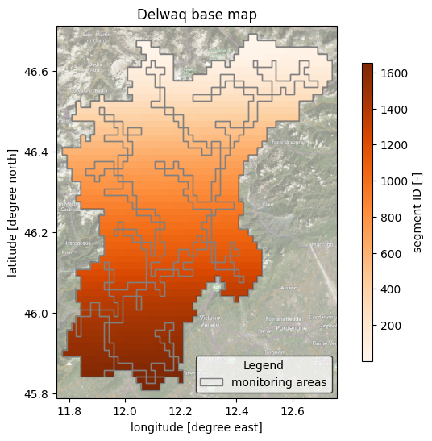
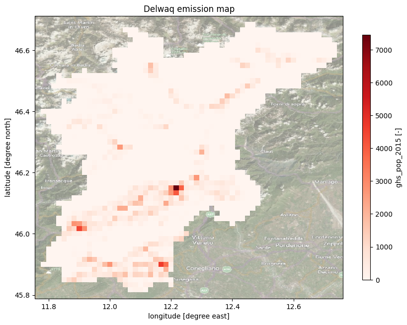

Tip
Plot DELWAQ data#
HydroMT provides a simple interface to model schematization from which we can make beautiful plots:
Raster layers are saved to the model
staticdataattribute as axarray.DatasetVector layers are saved to the model
geomsattribute as ageopandas.GeoDataFrame. Note that in case of DELWAQ these are not used by the model engine, but only for analysis and visualization purposes.Extracts from the linked hydrologic/hydraulic/hydrodynamic model are saved to the model
hydromapsattribute asxarray.Dataset. In the case of DELWAQ they are not used by the engine but can be useful for post-processing.
We use the cartopy package to plot maps. This packages provides a simple interface to plot geographic data and add background satellite imagery.
Load dependencies#
[1]:
import numpy as np
import matplotlib.pyplot as plt
from hydromt_delwaq import DelwaqModel, DemissionModel
/home/runner/miniconda3/envs/hydromt_delwaq/lib/python3.11/site-packages/tqdm/auto.py:21: TqdmWarning: IProgress not found. Please update jupyter and ipywidgets. See https://ipywidgets.readthedocs.io/en/stable/user_install.html
from .autonotebook import tqdm as notebook_tqdm
Read the model#
[2]:
root = 'EM_piave'
mod = DemissionModel(root, mode='r')
# Or for a DelwaqModel:
# mod = DelwaqModel('WQ_piave', mode='r')
2026-04-15 01:54:18,016 - hydromt.model.model - model - INFO - Initializing demission model from hydromt_delwaq (v0.3.2.dev0).
Plot model schematization base maps#
Here we plot the model basemaps (Segment ID map with basins, monitoring points and areas geometries).
[3]:
# plot maps dependencies
import matplotlib.patches as mpatches
import cartopy.crs as ccrs
import cartopy.io.img_tiles as cimgt
[4]:
# read and mask the model elevation
da = mod.hydromaps.data['ptid'].raster.mask_nodata()
da.attrs.update(long_name='segment ID', units='-')
# read/derive model basin boundary
gdf_bas = mod.basins
[5]:
# we assume the model maps are in the geographic CRS EPSG:4326
proj = ccrs.PlateCarree()
# adjust zoomlevel and figure size to your basis size & aspect
zoom_level = 10
figsize=(8, 6)
shaded= False # shaded elevation (looks nicer with more pixels (e.g.: larger basins))!
# initialize image with geoaxes
fig = plt.figure(figsize=figsize)
ax = fig.add_subplot(projection=proj)
extent = np.array(da.raster.box.buffer(0.02).total_bounds)[[0, 2, 1, 3]]
ax.set_extent(extent, crs=proj)
# add sat background image
ax.add_image(cimgt.QuadtreeTiles(), zoom_level, alpha=0.5)
## plot ptid
cmap = plt.cm.get_cmap('Oranges')
kwargs = dict(cmap=cmap)
# plot 'normal' elevation
da.plot(transform=proj, ax=ax, zorder=1, cbar_kwargs=dict(aspect=30, shrink=.8), **kwargs)
# plot the basin boundary
gdf_bas.boundary.plot(ax=ax, color='k', linewidth=0.3)
# plot various vector layers if present
if 'monpoints' in mod.geoms.data:
mod.geoms.data['monpoints'].plot(ax=ax, marker='d', markersize=25, facecolor='k', zorder=5, label='monitoring points')
patches = [] # manual patches for legend, see https://github.com/geopandas/geopandas/issues/660
if 'monareas' in mod.geoms.data:
kwargs = dict(facecolor='None', edgecolor='grey', label='monitoring areas')
mod.geoms.data['monareas'].plot(ax=ax, zorder=4, **kwargs)
patches.append(mpatches.Patch(**kwargs))
ax.xaxis.set_visible(True)
ax.yaxis.set_visible(True)
ax.set_ylabel(f"latitude [degree north]")
ax.set_xlabel(f"longitude [degree east]")
_ = ax.set_title(f"Delwaq base map")
legend = ax.legend(
handles=[*ax.get_legend_handles_labels()[0], *patches],
title="Legend",
loc='lower right',
frameon=True,
framealpha=0.7,
edgecolor='k',
facecolor='white'
)
# save figure
# NOTE create figs folder in model root if it does not exist
# fn_out = join(mod.root, "figs", "basemap.png")
# plt.savefig(fn_out, dpi=225, bbox_inches="tight")

Plot model emission maps#
Here we plot the model grid (emission grids).
[6]:
#List of available emission data in the model
print(f"Available static data: {list(mod.staticdata.data.keys())}")
Available static data: ['river', 'slope', 'streamorder', 'soil_thickness', 'porosity', 'ptiddown', 'monareas', 'ghs_pop_2015', 'gdp_world']
Use the code below to plot the different available emission data. You can also change the colors by using available colormaps from matplotlib.
[7]:
# Edit the lines below to change the emission map and its colormap
emissionmap = 'ghs_pop_2015'
colormap = 'Reds'
#Load the emission map
da = mod.staticdata.data[emissionmap].raster.mask_nodata()
da.attrs.update(long_name=emissionmap, units='-')
#Plot
# we assume the model maps are in the geographic CRS EPSG:4326
proj = ccrs.PlateCarree()
# adjust zoomlevel and figure size to your basis size & aspect
zoom_level = 10
figsize=(10, 8)
# initialize image with geoaxes
fig = plt.figure(figsize=figsize)
ax = fig.add_subplot(projection=proj)
extent = np.array(da.raster.box.buffer(0.02).total_bounds)[[0, 2, 1, 3]]
ax.set_extent(extent, crs=proj)
# add sat background image
ax.add_image(cimgt.QuadtreeTiles(), zoom_level, alpha=0.5)
## plot emission map
cmap = plt.cm.get_cmap(colormap)
kwargs = dict(cmap=cmap)
# plot 'normal' elevation
da.plot(transform=proj, ax=ax, zorder=1, cbar_kwargs=dict(aspect=30, shrink=.8), **kwargs)
ax.xaxis.set_visible(True)
ax.yaxis.set_visible(True)
ax.set_ylabel(f"latitude [degree north]")
ax.set_xlabel(f"longitude [degree east]")
_ = ax.set_title(f"Delwaq emission map")
